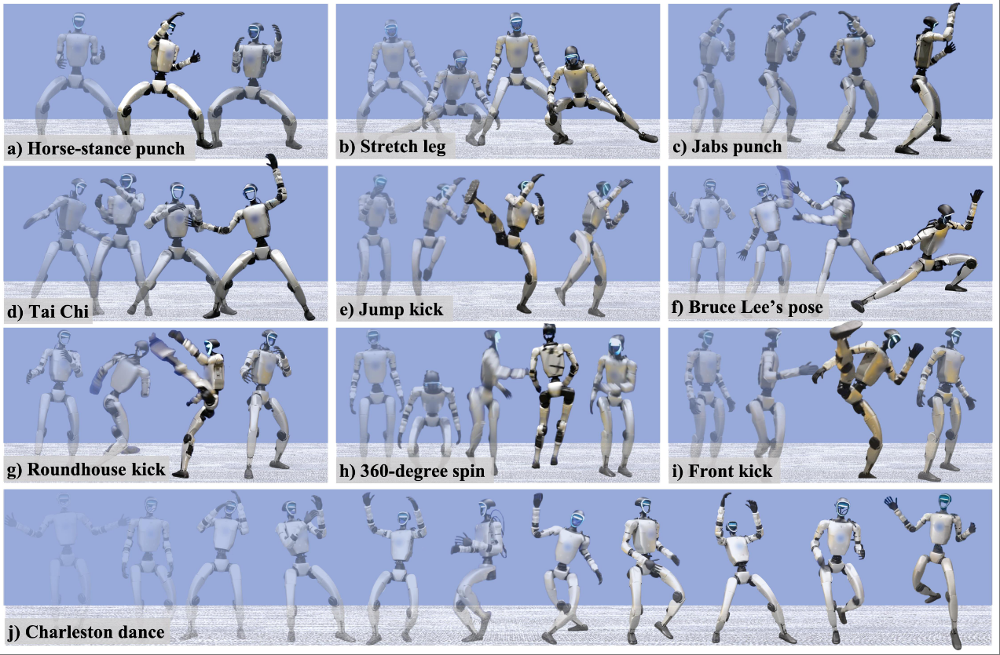

Jinrui Han「韩金睿」
Hi! I am an incoming 26Fall PhD student at The University of Hong Kong (HKU) & last-year master student at Shanghai Jiao Tong University (SJTU). Before that, I earned a Bachelor's degree from SJTU in 2023. I am currently a research intern at the Institute of Artificial Intelligence (TeleAI), China Telecom, co-working with Dr. Chenjia Bai and Prof. Xuelong Li to advance research on humanoid whole-body control. Feel free to contact me for any discussions or collaborations via email or wechat !{kind=link}
I do research in robotics, mainly focusing on applying
reinforcement learning to endow robots with human-like behaviors, including Humanoid Locomotion, Whole Body Control, Motion Tracking, Humanoid-Object Interaction, Loco-Manipulation.
📰 news
- [2026-04] HUSKY is accepted by RSS 2026.
- [2026-03] Invited talk at 具身智能之心.
- [2026-02] Release the project and code for HUSKY, TextOp, HumanoidSoccer.
- [2026-01] KungfuBot2 is accepted by ICRA 2026.
- [2025-10] Release the project and code for KungfuBot2.
- [2025-09] KungfuBot is accepted by NeurIPS 2025.
- [2025-06] Invited talk at 深蓝学院 and OpenGRO.
- [2025-06] Release the project and code for Kungfubot.
📄 projects

HUSKY:
Humanoid Skateboarding System via Physics-Aware Whole-Body Control
Robotics: Science and Systems (RSS), 2026
Jinrui Han*, Dewei Wang*, Chenyun Zhang, Xinzhe Liu, Ping Luo, Chenjia Bai†, Xuelong Li†
[arxiv] | [code] | [project]
TL;DR: A reinforcement learning–based whole-body control framework for stable and agile humanoid skateboarding.
Robotics: Science and Systems (RSS), 2026
Jinrui Han*, Dewei Wang*, Chenyun Zhang, Xinzhe Liu, Ping Luo, Chenjia Bai†, Xuelong Li†
[arxiv] | [code] | [project]
TL;DR: A reinforcement learning–based whole-body control framework for stable and agile humanoid skateboarding.

TextOp:
Real-time Interactive Text-Driven Humanoid Robot Motion Generation and Controll
In Submission
Weiji Xie*, Jiakun Zheng*, Jinrui Han, Jiyuan Shi, Weinan Zhang†, Chenjia Bai†, Xuelong Li
[arxiv] | [code] | [project]
TL;DR: A real-time interactive text-driven framework for humanoid motion generation and control that supports streaming language commands.
In Submission
Weiji Xie*, Jiakun Zheng*, Jinrui Han, Jiyuan Shi, Weinan Zhang†, Chenjia Bai†, Xuelong Li
[arxiv] | [code] | [project]
TL;DR: A real-time interactive text-driven framework for humanoid motion generation and control that supports streaming language commands.

Learning Soccer Skills for Humanoid Robots A Progressive Perception-Action Framework
In Submission
Jipeng Kong*, Xinzhe Liu*, Yuhang Lin, Jinrui Han, Sören Schwertfeger, Chenjia Bai†, Xuelong Li†
[arxiv] | [code] | [project]
TL;DR: A progressive perception–action framework enabling robust, human-like soccer kicking on humanoid robots.
In Submission
Jipeng Kong*, Xinzhe Liu*, Yuhang Lin, Jinrui Han, Sören Schwertfeger, Chenjia Bai†, Xuelong Li†
[arxiv] | [code] | [project]
TL;DR: A progressive perception–action framework enabling robust, human-like soccer kicking on humanoid robots.

KungfuBot2:
Learning Versatile Motion Skills for Humanoid Whole-Body Control
International Conference on Robotics and Automation (ICRA), 2026
Jinrui Han, Weiji Xie, Jiakun Zheng, Jiyuan Shi, Weinan Zhang, Ting Xiao, Chenjia Bai†
[arxiv] | [code] | [project]
TL;DR: A unified whole-body controller that enables humanoid robots to learn diverse and dynamic behaviors within a single policy.
International Conference on Robotics and Automation (ICRA), 2026
Jinrui Han, Weiji Xie, Jiakun Zheng, Jiyuan Shi, Weinan Zhang, Ting Xiao, Chenjia Bai†
[arxiv] | [code] | [project]
TL;DR: A unified whole-body controller that enables humanoid robots to learn diverse and dynamic behaviors within a single policy.

KungfuBot:
Physics-Based Humanoid Whole-Body Control for Learning Highly-Dynamic Skills
Conference on Neural Information Processing Systems (NeurIPS), 2025
Weiji Xie*, Jinrui Han*, Jiakun Zheng*, Huanyu Li, Xinzhe Liu, Jiyuan Shi, Weinan Zhang, Chenjia Bai†, Xuelong Li†.
[arxiv] | [code] | [project] | [talk]
TL;DR: A physics-based humanoid control framework, aiming to master highly-dynamic human behaviors such as Kungfu and dancing.
Conference on Neural Information Processing Systems (NeurIPS), 2025
Weiji Xie*, Jinrui Han*, Jiakun Zheng*, Huanyu Li, Xinzhe Liu, Jiyuan Shi, Weinan Zhang, Chenjia Bai†, Xuelong Li†.
[arxiv] | [code] | [project] | [talk]
TL;DR: A physics-based humanoid control framework, aiming to master highly-dynamic human behaviors such as Kungfu and dancing.